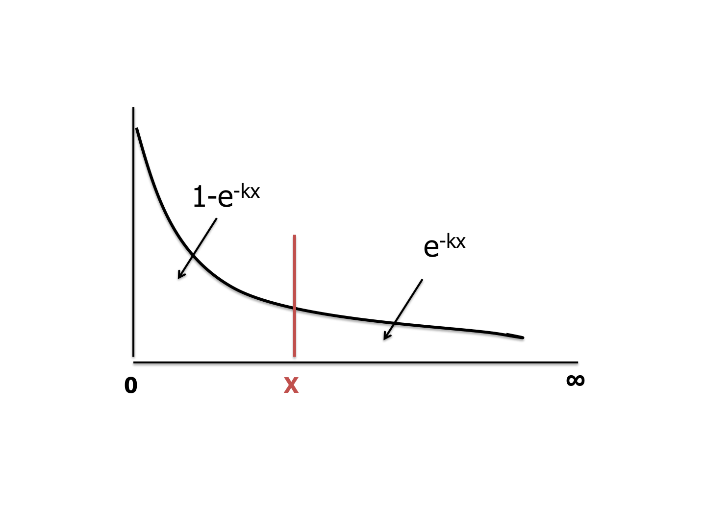

התפלגויות רציפות — מעריכית ונורמלית
⏱ זמן משוער: 70 דק'
0. האינטואיציה — מה משתנה כשעוברים מבדיד לרציף
עד עכשיו עבדנו עם התפלגויות בדידות: לכל ערך של המשתנה הבדיד הייתה הסתברות משלו, וסכום כל ההסתברויות היה 1 — Σp(x) = 1. אבל משתנה כמו גיל, גובה או שכר הוא רציף: בין כל שני ערכים יש אינסוף ערכים אפשריים, ולכן אי אפשר לרשום טבלה. בהתפלגות רציפה ההסתברות מתייחסת תמיד לתחום שבין 2 ערכים — השטח מתחת לעקומת הצפיפות — ועבור ערך מסוים בודד ההסתברות היא תמיד אפס.
למה אפס? ההסבר המתמטי: ההסתברות לאורך חיים של בדיוק 6 שנים היא אינטגרל מ-6 עד 6, כלומר אפס. וההסבר ההגיוני של המרצה: נחפש את ההסתברות לאורך חיים בתחום סביב 6 — נקבל שטח מסוים. נקטין את התחום ל-5.9–6.1 — ההסתברות תקטן. נקטין ל-5.99–6.01 — תקטן עוד יותר, ו"בדיוק 6" שואף לאפס. זו לא קוריוזה: במבחן תשע"א (שאלה 2) נשאל במפורש "מה ההסתברות שגובהו בדיוק 180 ס"מ" — והתשובה היא 0.
שתי ההתפלגויות הרציפות שהקורס מטפל בהן — כאלה שאפשר לייחס להן פונקציה מתמטית רציפה — הן ההתפלגות המעריכית (Exponential) וההתפלגות הנורמלית (Normal). הנורמלית היא הלב של שאלה 4 בכל מבחן של ד"ר סעד.
מקור: lec05-06-continuous-distributions-clt.pdf עמ' 1-2 · חוברת התרגילים, מבחן תשע"א
1. ההתפלגות המעריכית — זנב, גוף, ושני סימונים
ההתפלגות המעריכית משמשת להערכת אורך חיים של מכשירים (טלוויזיה, סוללה, רכיב אלקטרוני) ובאופן כללי — זמן עד אירוע. פונקציית הצפיפות, בסימון של ההרצאה:
f(x) = (1/k)·e−x/k , 0 ≤ x < ∞ (אחרת 0)
כאשר k הוא ממוצע ההתפלגות — הערה ממוסגרת של המרצה. ההסתברות בתחום הערכים השליליים היא אפס, ובצד החיובי העקומה יורדת בצורה מעריכית. השטח הכולל מתחת לעקומה הוא כמובן 1 (כל הערכים האפשריים):
∫0∞ (1/k)·e−x/k dx = 1
מה שמעניין לחישובים הוא השטח מאפס ועד x — "הגוף" — והשטח מ-x ועד הסוף — "הזנב", שהוא המשלים:
P(X ≤ x) = 1 − e−x/k (הגוף)
P(X > x) = e−x/k (הזנב)
אין צורך לחשב אינטגרל בכל פעם — שתי הנוסחאות האלה עושות את כל העבודה. והמלצה מפורשת של המרצה: עדיף תמיד לעבוד דרך "הזנב" — עבודה דרך "הגוף" עם האחד-מינוס מזמינה טעויות סימנים.

1.1 שני סימונים — הרצאה מול תרגול
זו נקודה שמפילה סטודנטים: ההרצאה והתרגול כותבים את אותה התפלגות בשני סימונים שונים. בטבלת ההתפלגויות של תרגול 06 מופיע:
| f(x) | E(X) | VAR(X) | P(X>x) | |
|---|---|---|---|---|
| הרצאה — k = ממוצע | (1/k)·e−x/k | k | k² | e−x/k |
| תרגול — k = קצב | k·e−kx | 1/k | 1/k² | e−kx |
ה-k של התרגול הוא פשוט אחד חלקי הממוצע: בשאלת החלקיק הרדיואקטיבי (ממוצע 2000 שנים) השקף כותב באדום k = 1/2000; בשאלת המטוסים (ממוצע 15 דקות) — k = 1/15; בשאלת התאונות (תוחלת 24 שעות) — k = 1/24. בשני הסימונים המעריך זהה — x חלקי הממוצע הוא בדיוק k·x.
מקור: lec05-06-continuous-distributions-clt.pdf עמ' 1 · class06.pptx עמ' 2, 4-7, 12
2. דוגמה מחושבת עד הסוף — אורך חיי טלוויזיה
תרגיל (הרצאה, עמ' 2): ידוע שאורך חיים ממוצע של טלוויזיה הוא 5 שנים. מה ההסתברות שמכשיר טלוויזיה אקראי "יחיה": מעל 6 שנים, מתחת ל-3 שנים, בין 3 ל-6 שנים.
א. מעל 6 שנים — יש למצוא את שטח הזנב:
e−x/k = e−6/5 = e−1.2 = 0.3012
ב. מתחת ל-3 שנים — יש למצוא את שטח "הגוף":
1 − e−3/5 = 1 − e−0.6 = 0.4512
ג. בין 3 ל-6 שנים — מבוקש שטח הזנב של 3 ואילך פחות שטח הזנב של 6 ואילך:
e−3/5 − e−1.2 = 0.5488 − 0.3012 = 0.2476
אפשר גם דרך "הגוף": (1 − e−1.2) − (1 − e−3/5) — לאחר קיזוז מתקבלת אותה תוצאה. לכן עדיף תמיד לעבוד רק דרך "הזנב", שאז חוסכים טעויות אפשריות בגלל המינוסים.
מקור: lec05-06-continuous-distributions-clt.pdf עמ' 2
3. ההתפלגות הנורמלית וציון התקן z
ההתפלגות הנורמלית היא עקומת פעמון סימטרית המאפיינת התנהגות של הרבה תופעות. במרכז יושבים הממוצע = החציון = השכיח, וככל שמתרחקים מהמרכז ההסתברות הולכת וקטנה. הסיכוי לחריגים משני הצדדים תמיד אפסי — בגובה, למשל, הסיכוי לגובה כמו של עוג מלך הבשן הוא אפסי. "הזנב" אינו אפס לגמרי, אבל הולך וקטן.
האינטגרל המתאר את ההתפלגות הנורמלית קשה לפתרון, ולכן החישובים נעשים באמצעות טבלה. הכניסה לטבלה היא דרך ציון התקן z:
z = (xᵢ − x̄) / σ
כלומר מספר סטיות התקן מן המרכז. עבור כל ערך של z הטבלה נותנת שטח (הסתברות) שמסומן באות היוונית Φ — השטח מן הקצה השמאלי ועד z.
דוגמת הפתיחה של ההרצאה: גובה אוכלוסיה מתפלג נורמלית עם ממוצע 175 וסטיית תקן 10. איזה אחוז מהאוכלוסיה נמוך מ-185?
z = (185 − 175) / 10 = 1 → Φ(1) = 0.8413
מסתכלים בטבלה עבור z = 1 ומקבלים את השטח מהקצה השמאלי ועד אליו: 84.13% מהאוכלוסיה.
מקור: lec05-06-continuous-distributions-clt.pdf עמ' 3
4. עבודה עם טבלת Φ — שלושת המצבים
טבלת Φ נותנת ערכי שטח עבור z בדיוק של מאיות (2 ספרות אחרי הנקודה), וערכי השטח בדיוק של 4 ספרות. איך קוראים: הטור השמאלי הוא z בדיוק של עשירית; לדיוק של מאיות זזים ימינה בטבלה עד לספרה המתאימה בכותרת. למשל Φ(1.15): שורה של z = 1.1, תנועה עד העמודה 5 — Φ(1.15) = 0.8749. באקסל: NORMSDIST(1.15) = 0.8749.
| המצב | מה עושים |
|---|---|
| z חיובי נתון | שורה (עשיריות) + עמודה (מאיות) → קוראים את Φ |
| z שלילי | הטבלה המקורית נותנת רק חיוביים; בגלל הסימטריה: Φ(−z) = 1 − Φ(z) |
| שאלה הפוכה — נתון שטח | מחפשים את השטח בגוף הטבלה, מחלצים את z, ומתרגמים לערך: X = x̄ + z·σ. באקסל: NORMSINV |
4.1 טבלת Φ(z) — גרסת HTML קומפקטית
הטבלה המלאה מהחוברת (השטח משמאל ל-z תחת העקום הנורמלי הסטנדרטי). להורדה: z-table.pdf.
| z | .00 | .01 | .02 | .03 | .04 | .05 | .06 | .07 | .08 | .09 |
|---|---|---|---|---|---|---|---|---|---|---|
| 0.0 | .5000 | .5040 | .5080 | .5120 | .5160 | .5199 | .5239 | .5279 | .5319 | .5359 |
| 0.1 | .5398 | .5438 | .5478 | .5517 | .5557 | .5596 | .5636 | .5675 | .5714 | .5753 |
| 0.2 | .5793 | .5832 | .5871 | .5910 | .5948 | .5987 | .6026 | .6064 | .6103 | .6141 |
| 0.3 | .6179 | .6217 | .6255 | .6293 | .6331 | .6368 | .6406 | .6443 | .6480 | .6517 |
| 0.4 | .6554 | .6591 | .6628 | .6664 | .6700 | .6736 | .6772 | .6808 | .6844 | .6879 |
| 0.5 | .6915 | .6950 | .6985 | .7019 | .7054 | .7088 | .7123 | .7157 | .7190 | .7224 |
| 0.6 | .7257 | .7291 | .7324 | .7357 | .7389 | .7422 | .7454 | .7486 | .7517 | .7549 |
| 0.7 | .7580 | .7611 | .7642 | .7673 | .7704 | .7734 | .7764 | .7794 | .7823 | .7852 |
| 0.8 | .7881 | .7910 | .7939 | .7967 | .7995 | .8023 | .8051 | .8078 | .8106 | .8133 |
| 0.9 | .8159 | .8186 | .8212 | .8238 | .8264 | .8289 | .8315 | .8340 | .8365 | .8389 |
| 1.0 | .8413 | .8438 | .8461 | .8485 | .8508 | .8531 | .8554 | .8577 | .8599 | .8621 |
| 1.1 | .8643 | .8665 | .8686 | .8708 | .8729 | .8749 | .8770 | .8790 | .8810 | .8830 |
| 1.2 | .8849 | .8869 | .8888 | .8907 | .8925 | .8944 | .8962 | .8980 | .8997 | .9015 |
| 1.3 | .9032 | .9049 | .9066 | .9082 | .9099 | .9115 | .9131 | .9147 | .9162 | .9177 |
| 1.4 | .9192 | .9207 | .9222 | .9236 | .9251 | .9265 | .9279 | .9292 | .9306 | .9319 |
| 1.5 | .9332 | .9345 | .9357 | .9370 | .9382 | .9394 | .9406 | .9418 | .9429 | .9441 |
| 1.6 | .9452 | .9463 | .9474 | .9484 | .9495 | .9505 | .9515 | .9525 | .9535 | .9545 |
| 1.7 | .9554 | .9564 | .9573 | .9582 | .9591 | .9599 | .9608 | .9616 | .9625 | .9633 |
| 1.8 | .9641 | .9649 | .9656 | .9664 | .9671 | .9678 | .9686 | .9693 | .9699 | .9706 |
| 1.9 | .9713 | .9719 | .9726 | .9732 | .9738 | .9744 | .9750 | .9756 | .9761 | .9767 |
| 2.0 | .9772 | .9778 | .9783 | .9788 | .9793 | .9798 | .9803 | .9808 | .9812 | .9817 |
| 2.1 | .9821 | .9826 | .9830 | .9834 | .9838 | .9842 | .9846 | .9850 | .9854 | .9857 |
| 2.2 | .9861 | .9864 | .9868 | .9871 | .9875 | .9878 | .9881 | .9884 | .9887 | .9890 |
| 2.3 | .9893 | .9896 | .9898 | .9901 | .9904 | .9906 | .9909 | .9911 | .9913 | .9916 |
| 2.4 | .9918 | .9920 | .9922 | .9925 | .9927 | .9929 | .9931 | .9932 | .9934 | .9936 |
| 2.5 | .9938 | .9940 | .9941 | .9943 | .9945 | .9946 | .9948 | .9949 | .9951 | .9952 |
| 2.6 | .9953 | .9955 | .9956 | .9957 | .9959 | .9960 | .9961 | .9962 | .9963 | .9964 |
| 2.7 | .9965 | .9966 | .9967 | .9968 | .9969 | .9970 | .9971 | .9972 | .9973 | .9974 |
| 2.8 | .9974 | .9975 | .9976 | .9977 | .9977 | .9978 | .9979 | .9979 | .9980 | .9981 |
| 2.9 | .9981 | .9982 | .9982 | .9983 | .9984 | .9984 | .9985 | .9985 | .9986 | .9986 |
| 3.0 | .9987 | .9987 | .9987 | .9988 | .9988 | .9989 | .9989 | .9989 | .9990 | .9990 |
| 3.1 | .9990 | .9991 | .9991 | .9991 | .9992 | .9992 | .9992 | .9992 | .9993 | .9993 |
| 3.2 | .9993 | .9993 | .9994 | .9994 | .9994 | .9994 | .9994 | .9995 | .9995 | .9995 |
| 3.3 | .9995 | .9995 | .9995 | .9996 | .9996 | .9996 | .9996 | .9996 | .9996 | .9997 |
| 3.4 | .9997 | .9997 | .9997 | .9997 | .9997 | .9997 | .9997 | .9997 | .9997 | .9998 |
4.2 טבלת העזר לשאלות הפוכות — z כפונקציה של Φ
בתחתית עמוד הטבלה בחוברת יש טבלת עזר קטנה לערכי שטח "עגולים" — שימושית במיוחד לשאלות הפוכות ולרווחי סמך בהמשך:
| Φ(z) | z | Φ(z) | z | Φ(z) | z |
|---|---|---|---|---|---|
| .50 | 0 | .80 | .842 | .95 | 1.645 |
| .55 | .126 | .85 | 1.036 | .96 | 1.751 |
| .60 | .253 | .90 | 1.282 | .97 | 1.881 |
| .65 | .385 | .91 | 1.341 | .98 | 2.054 |
| .70 | .524 | .92 | 1.405 | .99 | 2.326 |
| .75 | .674 | .93 | 1.476 | .995 | 2.576 |
בהרצאה המרצה עובד עם ערכים מעוגלים מעט אחרת מטבלת העזר — z(Φ=0.99) = 2.33, z(Φ=0.75) = 0.675, z(Φ=0.7) = 0.525 — אלה הערכים שנשתמש בהם בפתרונות.
מקור: lec05-06-continuous-distributions-clt.pdf עמ' 3-4 · חוברת התרגילים עמ' 14 (טבלת Φ המלאה) · z-table.pdf
5. מעבדה — לתרגם ערכים ל-z ולשטח
לפני שניגשים לתרגיל המרכזי, שווה "להרגיש" את התרגום x → z → Φ בידיים. המרצה דורש שרטוט פעמון נפרד לכל סעיף עם קווקוו של השטח הנדרש — המעבדה הזו עושה בדיוק את זה, עם הדוגמאות של הקורס:
6. השאלה ההפוכה — אחוזונים בהתפלגות נורמלית
עד עכשיו: נתון ערך → מחשבים z → קוראים שטח. בשאלה ההפוכה נתון השטח (ההסתברות) ומחפשים את הערך. אלה בדיוק שאלות אחוזון / עשירון / רבעון, והמתכון קבוע:
- מתרגמים את האחוזון לשטח משמאל: עשירון 7 = 70% מתחתיו → Φ = 0.7.
- מחפשים את השטח בגוף הטבלה ומחלצים את z.
- מתרגמים לערך: z = (X − x̄)/σ → X = x̄ + z·σ.
וקיצור דרך לטווח הבין-רבעוני שהמרצה מדגיש: רבעון III יושב ב-z = 0.675 ורבעון I ב-z = −0.675, כלומר המרחק בין הרבעונים הוא תמיד 1.35 סטיות תקן — אין צורך לחשב את שני הערכים בנפרד.
מקור: lec05-06-continuous-distributions-clt.pdf עמ' 7 (עמוד כתוב 6)
7. תרגילי הקורס
7.1 תרגיל הגבהים המלא — 6 סעיפים (הרצאה)
תרגיל (הרצאה, עמ' 4): נתונה אוכלוסיה מתפלגת נורמלית עם ממוצע 175 וסטיית תקן 10. נלקח אדם אקראי מאוכלוסיה זו. מה ההסתברות שגובהו:
- מעל 190
- בין 175 ל-185
- בין 185 ל-195
- בין 155–165
- מתחת ל-160
- מה גובה משקוף הדלת כך ש-99% יעברו תחתיו בלי להתכופף.
לפתרון כזה יש לתת שרטוט נפרד לכל סעיף, כך שניתן לראות בדיוק את השטח הנדרש (דרישה מפורשת של המרצה).
א. מעל 190 (זנב ימני מעבר ל-190):
z(190) = (190 − 175) / 10 = 1.5 → Φ(1.5) = 0.9332
P(X > 190) = 1 − 0.9332 = 0.0668
ב. בין 175 ל-185:
z(185) = (185 − 175) / 10 = 1 → Φ(1) = 0.8413
P = 0.8413 − 0.5 = 0.3413
מחסירים 0.5 כי צד שמאל של 175 הוא מחצית משטח הפעמון. אם היינו משתמשים בטבלת המרכז (זו של פתרונות החוברת) היינו מקבלים ישר 0.3413 ללא החסרה.
ג. בין 185 ל-195:
z(195) = (195 − 175) / 10 = 2 → Φ(2) = 0.9772
z(185) = 1 → Φ(1) = 0.8413
P = 0.9772 − 0.8413 = 0.1359
טעות נפוצה היא לקחת (195 − 185)/10 = 1 ולתרגם לשטח. זה כמובן לא נכון — סטיית תקן שקרובה למרכז "שווה" הרבה יותר שטח מאשר סטיית תקן הרחוקה מן המרכז.
ד. בין 155–165 (משמאל למרכז):
z(165) = (165 − 175) / 10 = −1 , z(155) = −2
ערכים שליליים אינם בטבלה המקורית. עם טבלת ערכים שליליים: Φ(−1) − Φ(−2) = 0.1587 − 0.0228 = 0.1359. בלי טבלה כזו — משתמשים ב-Φ(−z) = 1 − Φ(z):
[1 − Φ(1)] − [1 − Φ(2)] = Φ(2) − Φ(1) = 0.9772 − 0.8413 = 0.1359
שימו לב: בגלל הסימטריה ההסתברויות ב-ג' וב-ד' זהות.
ה. מתחת ל-160 (זנב שמאלי):
z = (160 − 175) / 10 = −1.5
Φ(−1.5) = 1 − Φ(1.5) = 1 − 0.9332 = 0.0668
ו. גובה משקוף כך ש-99% יעברו תחתיו — שאלה הפוכה: נתון השטח 0.99, מחפשים בטבלה ומוצאים z = 2.33:
2.33 = (X − 175) / 10 → X = 198.3
7.2 עשירון 7 וטווח בין-רבעוני (הרצאה)
תרגיל נוסף (הרצאה, עמ' 6 הכתוב): באוכלוסיה המתפלגת נורמלית עם ממוצע 175 וסטיית תקן 10, מצא מהו העשירון ה-7 ומהו הטווח הבין-רבעוני (interquartile range).
א. העשירון השביעי הוא נקודה ש-70% מתחתיה ו-30% מעליה:
Φ(z) = 0.7 → z = 0.525
0.525 = (X − 175) / 10 → X = 180.25
ב. הטווח הבין-רבעוני — הדרך המלאה:
Φ = 0.75 → z = 0.675 → X₇₅% = 181.75
Φ = 0.25 → z = −0.675 → X₂₅% = 168.25
IQR = 181.75 − 168.25 = 13.5
זו דרך נכונה אבל ארוכה ומסורבלת. הדרך הקצרה: המרחק בין הרבעונים הוא 1.35 סטיות תקן, וכל סטיית תקן היא 10 — לכן המרחק 13.5 ס"מ.
מקור: lec05-06-continuous-distributions-clt.pdf עמ' 4-7
7.3 תרגילי נורמלית ומעריכית מתרגול 06
שקפי התרגול מכילים את ניסוחי השאלות בלבד (עם רמזי פתרון באדום) — הפתרונות שלהלן נכתבו לאתר בשיטות המרצה.
שאלה 1 (תרגול 06): ציוני בחינה בבית ספר גדול מתפלגים נורמלית. הציון הממוצע הוא 68, והשונות היא 100.
- מהו חציון ציוני הבחינה?
- בוחרים באקראי תלמיד. מה ההסתברות שציונו בין 58 ל-88?
- מספר התלמידים שציוניהם בבחינה הם בין 58 ל-88 הוא 902. מהי ההערכה שניתן להסיק מנתון זה לגבי מספר התלמידים בבית הספר שניגשו לבחינה.
שימו לב לנתון: נתונה שונות 100 — לכן סטיית התקן היא σ = √100 = 10.
א. בהתפלגות נורמלית הממוצע = החציון = השכיח (סימטריה), ולכן החציון הוא 68.
ב. מתקננים כל גבול בנפרד:
z(88) = (88 − 68) / 10 = 2 → Φ(2) = 0.9772
z(58) = (58 − 68) / 10 = −1 → Φ(−1) = 1 − 0.8413 = 0.1587
P(58 < X < 88) = 0.9772 − 0.1587 = 0.8185
ג. התחום 58–88 מכיל 81.85% מהנבחנים, והם 902 תלמידים. מספר הנבחנים הכולל:
n = 902 / 0.8185 ≈ 1102
כלומר כ-1,102 תלמידים ניגשו לבחינה.
פתרון שנכתב לאתר בשיטות המרצה; בשקפי התרגול אין פתרון מלא.
שאלה 2 (תרגול 06): משך הזמן עד להתפרקות של חלקיק רדיואקטיבי R מתפלג מעריכית עם ממוצע של 2000 שנים. סונתז חומר אשר מכיל 10 חלקיקי R. מה ההסתברות שלאחר 500 שנים החומר יכיל 50% מהחלקיקים הרדיואקטיביים?
רמזי המתרגל בשקף (באדום): התפלגות מעריכית (k = 1/2000); X — משך הזמן עד להתפרקות חלקיק בודד; מתארת תופעות אקראיות שהסיכוי להתרחשותן קבוע בזמן.
שלב 1 — חלקיק בודד. ההסתברות שחלקיק בודד עדיין לא התפרק אחרי 500 שנים היא שטח הזנב (האינטגרל מ-500 עד אינסוף שמסומן בשקף):
P(X > 500) = e−500/2000 = e−0.25 = 0.7788
שלב 2 — 10 חלקיקים. "החומר יכיל 50% מהחלקיקים" פירושו שבדיוק 5 מתוך 10 שרדו. החלקיקים בלתי תלויים ולכל אחד אותה הסתברות הישרדות — זו התפלגות בינומית:
P = C(10,5) · 0.7788⁵ · 0.2212⁵
P = 252 · 0.2865 · 0.00053 ≈ 0.038
ההסתברות היא כ-3.8%. זו התבנית הדו-שלבית האהובה על המרצה: התפלגות רציפה נותנת את ה-p, ובינומית סופרת הצלחות.
פתרון שנכתב לאתר בשיטות המרצה; בשקפי התרגול אין פתרון מלא.
שאלה 3 (תרגול 06): משך הזמן הבין-מופעי של מטוסים הממריאים מנתב"ג הינו 15 דקות בממוצע, כאשר ידוע כי התפלגות משך הזמן עד להמראת מטוס הינה מעריכית. מאיר אוהב להביט במטוסים ממריאים. מה ההסתברות שבמשך שעה שהוא מבלה בנמל התעופה:
- הוא יראה מטוס אחד ממריא?
- הוא לא יראה אף מטוס ממריא?
- הוא יראה לכל היותר שני מטוסים ממריאים?
רמז המתרגל בשקף (באדום): התפלגות מעריכית (k = 1/15); X — משך הזמן עד להמראת מטוס.
הזמן הבין-מופעי מעריכי — ולכן מספר ההמראות בחלון זמן מתפלג פואסונית עם λ = k·t. שעה = 60 דקות:
λ = (1/15) · 60 = 4
א. בדיוק מטוס אחד:
P(X=1) = e−4·4¹/1! = 4·e−4 ≈ 0.0733
ב. אף מטוס:
P(X=0) = e−4 ≈ 0.0183
ג. לכל היותר שניים — סוכמים 0, 1, 2:
P(X≤2) = e−4·(1 + 4 + 4²/2!) = 13·e−4 ≈ 0.2381
פתרון שנכתב לאתר בשיטות המרצה; בשקפי התרגול אין פתרון מלא.
שאלה 8 (תרגול 06): הזמן שעובר בכביש מסוים עד להתרחשות תאונה מתפלג מעריכית עם תוחלת של 24 שעות.
- מהי סטית התקן של הזמן עד להתרחשות תאונה?
- מה ההסתברות שהתאונה הבאה תתרחש תוך פחות מיממה?
- מהי ההסתברות שהתאונה הבאה תתרחש תוך לפחות יומיים?
א. במעריכית VAR = 1/k², ולכן סטיית התקן שווה לתוחלת: 24 שעות. (זו המלכודת של הסעיף — לא צריך שום חישוב.)
ב. פחות מיממה = הגוף עד 24 שעות:
P(X < 24) = 1 − e−24/24 = 1 − e−1 = 0.6321
ג. "תוך לפחות יומיים" = הזנב מעבר ל-48 שעות:
P(X > 48) = e−48/24 = e−2 = 0.1353
פתרון שנכתב לאתר בשיטות המרצה; בשקפי התרגול אין פתרון מלא.
שאלה 10 (תרגול 06): הדרישה השבועית למוצר מסוים בסופרמרקט מתפלג נורמלית עם תוחלת 100 וסטיית תקן 20. בעל הסופרמרקט הזמין בשבוע מסוים 90 יחידות מהמוצר. מהי ההסתברות ש:
- יהיו מספיק יחידות עבור כל הלקוחות המעוניינים ברכישה?
- יהיה חוסר של 30 יחידות או יותר?
א. "מספיק יחידות" פירושו שהביקוש לא יעלה על 90:
z = (90 − 100) / 20 = −0.5
P(X ≤ 90) = Φ(−0.5) = 1 − Φ(0.5) = 1 − 0.6915 = 0.3085
ב. חוסר של 30 יחידות או יותר פירושו ביקוש של 90 + 30 = 120 ומעלה:
z = (120 − 100) / 20 = 1
P(X ≥ 120) = 1 − Φ(1) = 1 − 0.8413 = 0.1587
פתרון שנכתב לאתר בשיטות המרצה; בשקפי התרגול אין פתרון מלא.
מקור: class06.pptx עמ' 3-7, 12, 14
8. מלכודות למבחן
9. בדיקה עצמית
מדוע במשתנה רציף ההסתברות לערך בודד מדויק — למשל אורך חיי טלוויזיה של בדיוק 6 שנים — היא אפס?
אורך חיים ממוצע של טלוויזיה הוא 5 שנים (התפלגות מעריכית). מה ההסתברות שמכשיר אקראי "יחיה" מעל 6 שנים?
בתרגיל הגבהים (μ=175, σ=10) סטודנט חישב את ההסתברות לגובה בין 185 ל-195 כך: z = (195 − 185)/10 = 1 ולכן Φ(1) = 0.8413. מה הבעיה?
גובה מתפלג נורמלית עם ממוצע 175 וסטיית תקן 10. מה ההסתברות לגובה מתחת ל-160?
מה גובה משקוף הדלת כך ש-99% מהאוכלוסיה (μ=175, σ=10) יעברו תחתיו בלי להתכופף?
הזמן עד תאונה מתפלג מעריכית עם תוחלת 24 שעות. מהי סטיית התקן של הזמן עד תאונה?
זמן ההמתנה בין המראות מטוסים מתפלג מעריכית עם ממוצע 15 דקות. איך מחשבים את ההסתברות שמאיר יראה בדיוק מטוס אחד ממריא במשך שעה?
פתרונות חוברת התרגילים משתמשים בטבלה שמודדת שטח "מהמרכז ועד z". מה היחס בין ערכיה לערכי טבלת Φ של ההרצאה (מהקצה השמאלי)?
סיימתם את הפרק? סמנו אותו כהושלם: